13 ggplot2 with more than one variable
Load your data & packages if you don’t already have them loaded
library(ggplot2)
library(dplyr)
medal_counts <- read.csv(file.path("data", "medal_counts.csv"))
medal_counts_wide <- read.csv(file.path("data", "medal_counts_wide.csv"))
usa_gold_medals <- read.csv(file.path("data", "usa_gold_medals.csv"))
usa_all_medals <- medal_counts |>
filter(NOC == "USA")13.1 aes()
13.1.1 Anatomy of aes()
So far, we’ve been mostly plotted two variables: x and y.
Sometimes you want to show relationships between more than two types of data.
Colors, line types (dots, dashes), shapes and sizes are good ways to do that.
# Pseudo code, will not work
ggplot(data = , aes(x = , y = , color = , linetype = , shape = , size = ))These four aesthetic parameters (color, linetype, shape, size) can be used to show variation in kind (categories/factors) and variation in degree (numeric (ex: fill)).
usa_all_medals |>
ggplot() +
aes(x = Year, y = count, color = Medal) +
geom_line()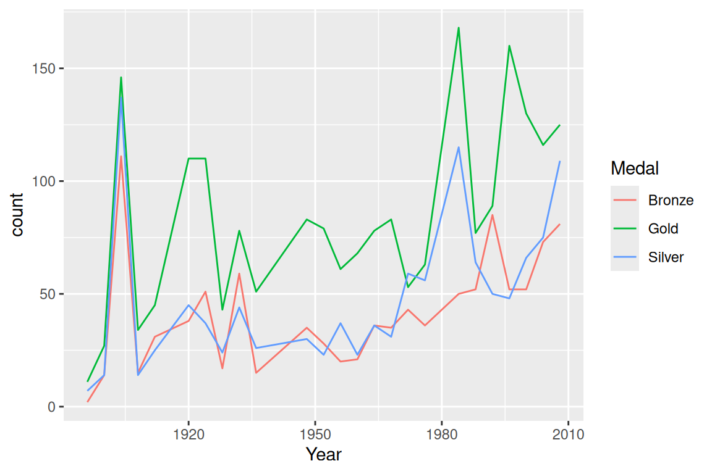
But wait, we also saw we could color the line of just one line, what is the difference?
usa_gold_medals |>
ggplot() +
aes(x = Year, y = count) +
geom_line(color = "Blue")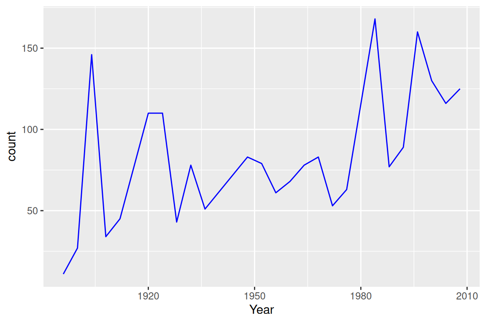
I want to:
Change the color of all the points in my x-y scatter plot to blue:
- supply ‘color =’ OUTSIDE the
aes()argument
- supply ‘color =’ OUTSIDE the
Change the color of all the points in my x-y scatter plot based on a variable in my data set:
- supply ‘color =’ INSIDE the
aes()argument
- supply ‘color =’ INSIDE the
Parameters passed into aes should be columns in your dataset.
Parameters passed to geom_xxx outside of aes should not be related to your data set – they apply to the whole figure.
ggplot(data = usa_all_medals) +
aes(
x = Year,
y = count,
color = Medal,
linetype = Medal
) + # color, linetype are different for each Medal type
geom_line(size = 1) + # size applies to ALL lines
scale_color_manual(
values = c(Gold = "gold", Silver = "grey70", Bronze = "orange")
)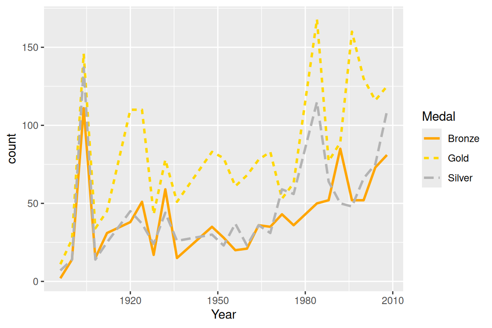
Long data is usually easier to work with in ggplot!
Note what happens when we specify the color parameter outside of the aesthetic operator. ggplot2 views these specifications as invalid graphical parameters.
usa_all_medals |>
ggplot() +
aes(x = Year, y = count, colour = Medal) +
geom_point()
usa_all_medals |>
ggplot() +
aes(x = Year, y = count) +
geom_point(colour = Medal) # how can we fix this error?
#> Error:
#> ! object 'Medal' not found
usa_all_medals |>
ggplot() +
aes(x = Year, y = count) +
geom_point(colour = "red")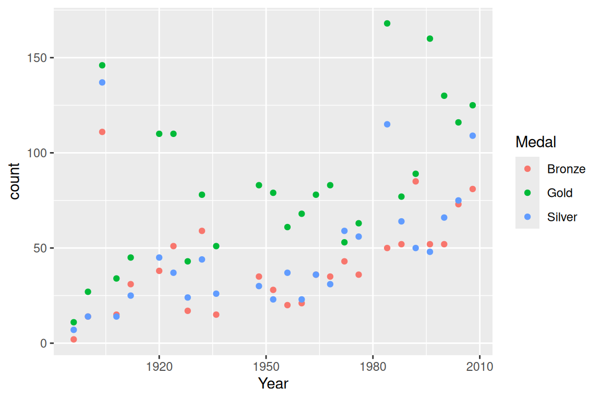
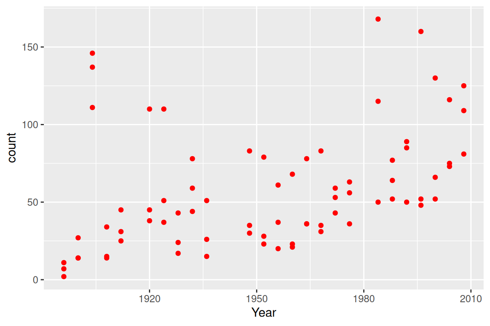
13.1.2 Base R, ggplot and tidy data
- Base graphics/lattice and
ggplot2have one big difference:ggplot2requires your data to be in tidy format. For base graphics, it can actually be helpful not to have your data in tidy format.
The difference is that ggplot treats Medal as an aesthetic parameter that differentiates kinds of statistics, whereas base graphics treats each (year, medal) pair as a set of inputs to the plot.
Compare:
# base R plot (run whole chunk)
usa_all_medals_untidy <- medal_counts_wide |>
filter(NOC == "USA")
plot(
usa_all_medals_untidy$Year,
usa_all_medals_untidy$Gold,
col = "gold",
type = "l",
xlab = "Year",
ylab = "Number of medals"
)
lines(
usa_all_medals_untidy$Year,
usa_all_medals_untidy$Silver,
col = "grey"
)
lines(
usa_all_medals_untidy$Year,
usa_all_medals_untidy$Bronze,
col = "orange"
)
legend(
"top",
legend = c("Gold", "Silver", "Bronze"),
fill = c("gold", "grey", "orange")
)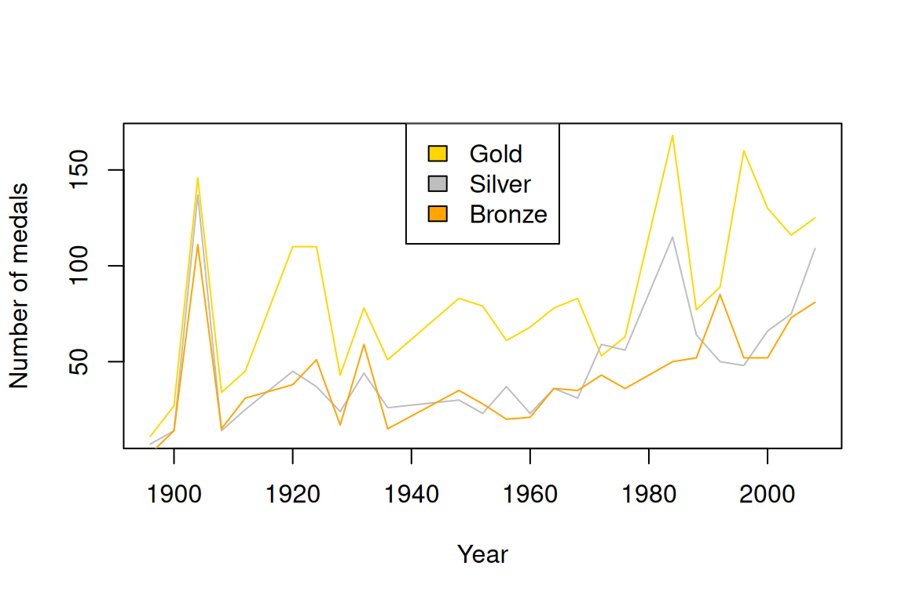
# ggplot2 call
ggplot(data = usa_all_medals) +
aes(x = Year, y = count) +
geom_line(aes(color = Medal)) +
scale_color_manual(values = c("gold", "grey", "orange"))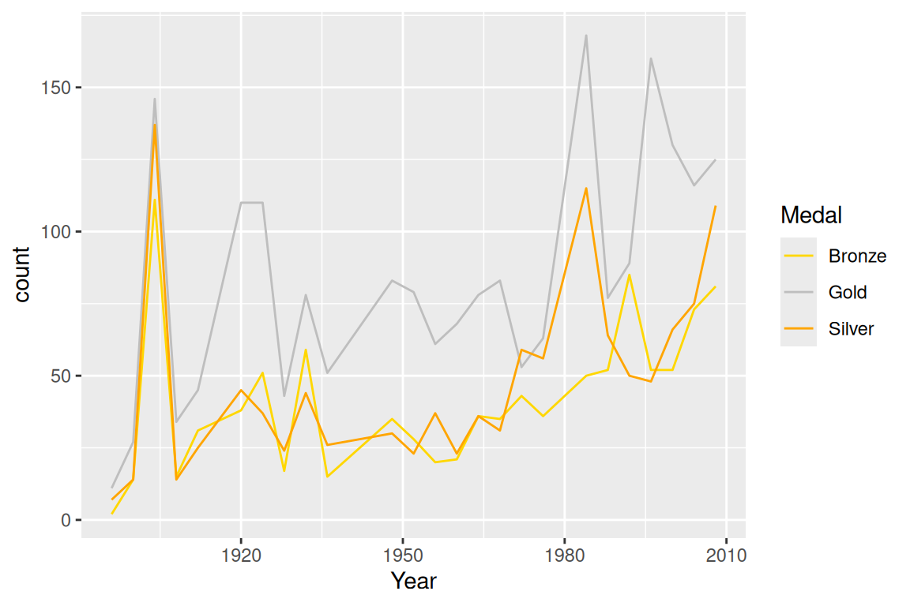
13.2 Customizing aesthetics in ggplot
ggplot handles options in additional layers.
13.2.0.1 Aesthetics across the whole layer
If you are changing an option (color, line type…) that applies to all data, pass it as an argument to that layer.
ggplot(data = usa_gold_medals, aes(x = Year, y = count)) +
geom_point()
# Now with bigger points
ggplot(data = usa_gold_medals, aes(x = Year, y = count)) +
geom_point(size=3)
# Now with tiny points
ggplot(data = usa_gold_medals, aes(x = Year, y = count)) +
geom_point(size=0.1)
ggplot(data = usa_gold_medals, aes(x = Year, y = count)) +
geom_point(color = "darkorange")
ggplot(data = usa_gold_medals, aes(x = Year, y = count)) +
geom_point(color = "#266F36", size = 3, shape = 15) 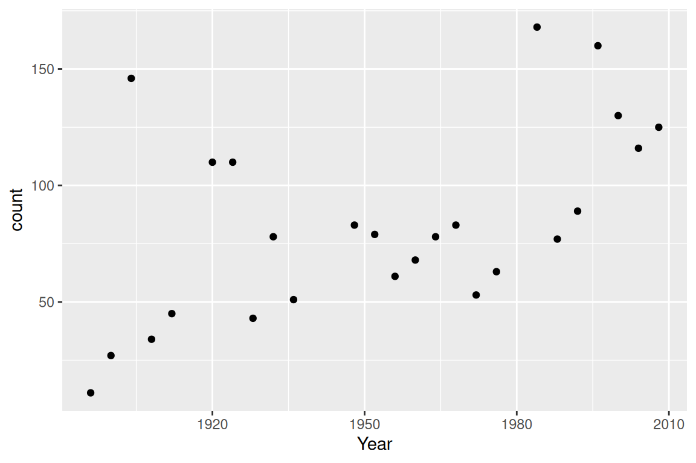
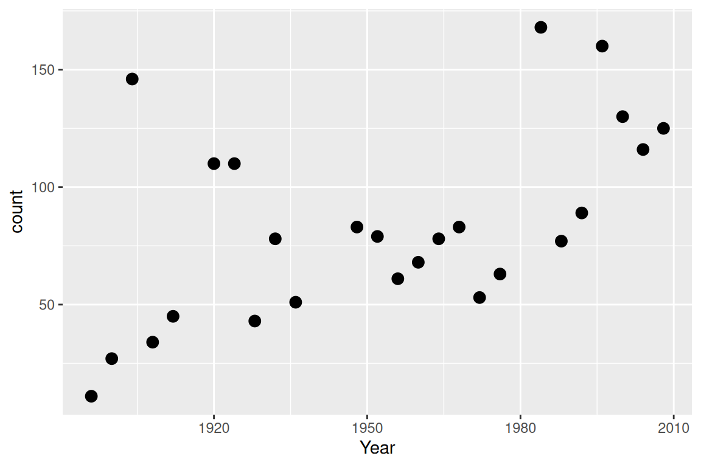
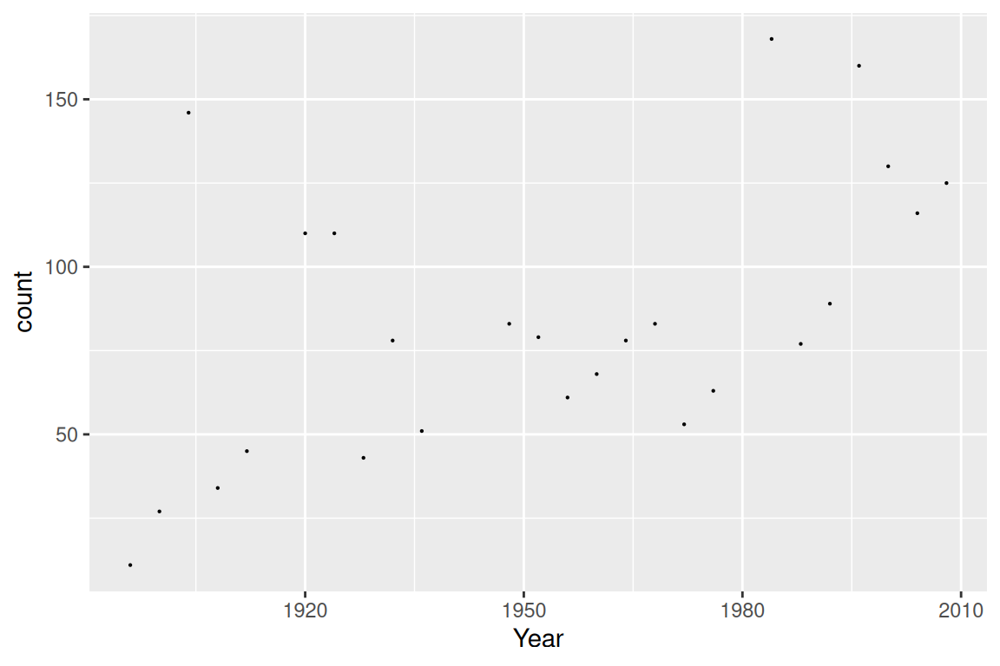
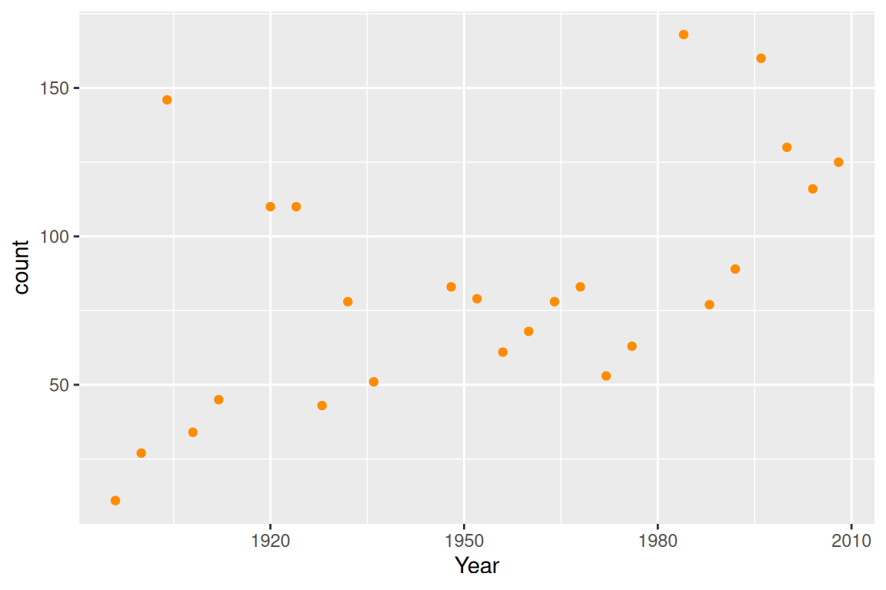
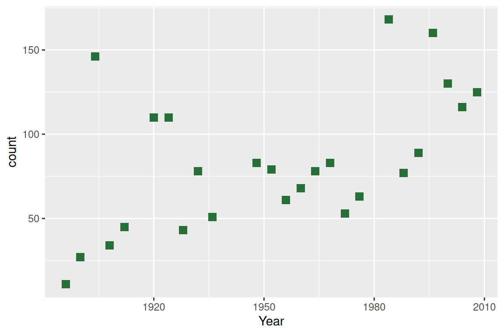
13.2.0.2 Using aesthetics to highlight features
If you want to customize how elements of a plot show up and that element is controlled by a variable in your data, use the scale_* family of functions.
northern_hem <- medal_counts_wide |>
filter(NOC %in% c("USA", "CAN", "MEX", "CUB"))
ggplot(data = northern_hem, aes(x = Year, y = Gold)) +
geom_point(aes(shape = NOC, color = NOC))
# same as above but specifying the colors
ggplot(data = northern_hem, aes(x = Year, y = Gold)) +
geom_point(aes(shape = NOC, color = NOC)) +
scale_color_manual(
values = c("darkblue", "orangered", "yellow4", "pink3")
)
?scale_color_manual
# same as above but specifying the colors and the shape
ggplot(data = northern_hem, aes(x = Year, y = Gold)) +
geom_point(aes(shape = NOC, color = NOC)) +
scale_color_manual(values = c("darkblue", "orangered", "yellow4", "pink3")) +
scale_shape_manual(values = c(5, 6, 7, 8))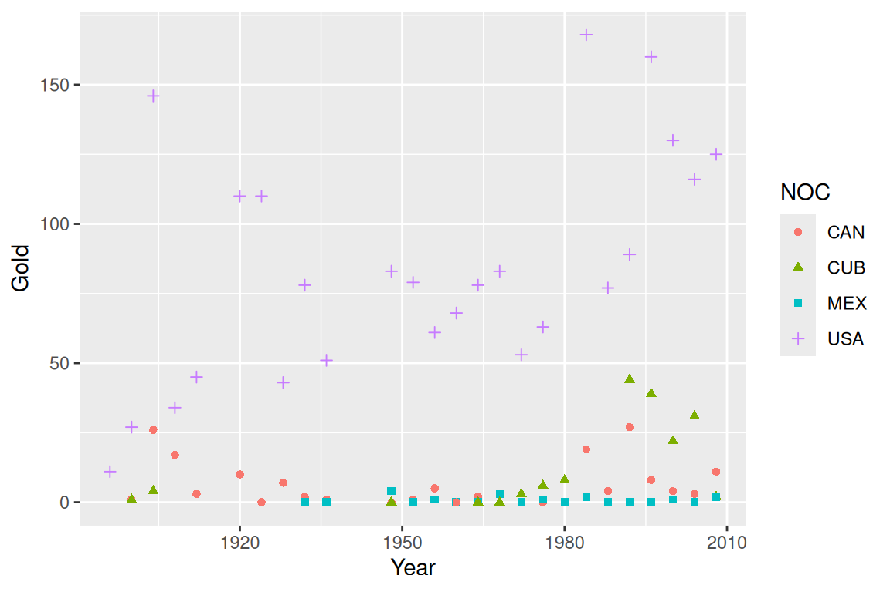
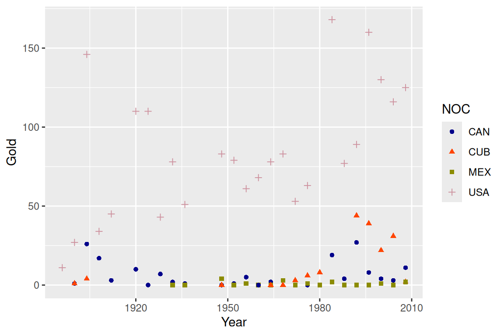
See named colors here: http://sape.inf.usi.ch/sites/default/files/ggplot2-colour-names.png
You can also supply color hexes. (“#FF0055”)
13.2.0.3 A note about color choice
Color blindness is quite common and can affect how well people can read your graphs. Making color palettes that can be read by everyone and that look attractive is an active field of research.
There are also tools to help!
require(cols4all)
c4a_table(type = "cat", n = 7)
c4a("safe")13.3 Breakout Questions
- The datasets::Orange data frame describes the growth of 5 orange trees over time (days). Plot a graph showing the
circumferenceover time, with each tree distinguished by a different color.
- Update your graph by manually setting the colors of each tree, and adding informative axis labels
- The trees seem to grow at different rates depending on their age. Use
scale_y_log10to compare how scaling the y-axis influences how you read the graph.
- Save your favorite version of your plot to the
figuresdirectory.